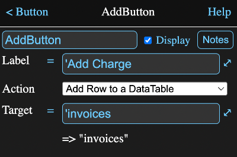

Overview
The button tool lets you place a button with some common actions onto a model
information view or an html page.
Information View

The fields are:
Label
A formula field for the text that will appear on the button.
Action
The action that will take place when the button is pressed.
-
Add Row to a Data Table. The data table will use its inital value formulas
to fill in the fields.
-
Push View of Tool. The information view for the targeted tool will replace the
current one. Tapping the back button at the top of the new view will return to
the original one.
-
Refresh Tool. The targeted tool will be forced to recalculate itself. This
is rarely needed, but can be useful for things like time and random numbers.
-
Load Session. The targeted session will replace the current one.
-
Load Session Url. An attempt will be made to load a session from an
Internet address supplied as the target. This is likely to fail due to security
reasons unless the file is on the same server as the one that provided the MM code.
(See
CORS)
-
Console Command. The target string will be used as a command such as used in
the Console view. This is probably best ignored unless you
are sure you know what you are doing.
Target
A formula field for the target of the action. The formula should evaluate to a string
that is the name of either a tool or a session, depending on what the action is.
A drop down menu where the target of the action is selected. The result of evaluating
the formula is displayed below the field and if it isn't a string, it will display as
"?".
Formula Parameters
Parameters that can be accessed in the form a.b where a is the tool name and b is the parameter name.
- action - the selected action. One of ("addrow", "push", "refresh", "load").
- target - the result of evaluating the target formula and should be either
a tool name or a session name
- label - the result of evaluating the label formula
- html - a html code representation of the tool.
- notes - the notes for the tool
- myname - the name of the tool